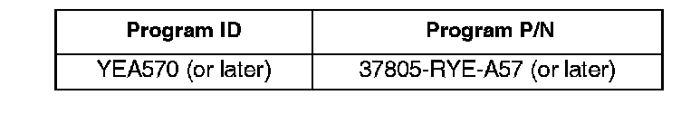

Engine Controls - MIL ON/DTC's P0111 and P2183 Set
08-001January 12, 2008
Applies To:
2007 MDX - ALL
MIL Comes On With DTCs P0111 and P2183
SYMPTOM
The MIL is on with DTC P0111 (intake air temperature [IAT] sensor circuit range/performance problem) and DIG P2183 (engine coolant temperature [ECT] sensor [sensor 2] circuit range/performance problem).
PROBABLE CAUSE
When a vehicle is parked in direct sunlight, the underhood air temperature can rise faster than the engine coolant temperature. This could create a higher than normal voltage difference between the IAT and ECT sensors, causing the PCM to store DTCs P0111 and P2183.
CORRECTIVE ACTION
Update the PGM-FI software with the HDS.
SOFTWARE INFORMATION
HDS Software Version:
2.012.013 (December 2007) or later.
Application Version V6.10.06 or later.
Database Update 27-Nov-2007 or later.
NOTE:
If you use an earlier HDS software version, the HDS may incorrectly indicate that the vehicle does not need an update when it actually does.

The updated PGM-FI software program ID and P/N is shown below. If this, or a later program ID, is the Current Program ID displayed during the update, the software for this service bulletin is already installed.
WARRANTY CLAIM INFORMATION
In warranty:
The normal warranty applies.
Operation Number: 123503
Flat Rate Time: 0.3 hour
Failed Part: P/N 37820-RYE-A57
Defect Code: 03214
Symptom Code: 03203
Template ID: 08-001A
Skill Level: Repair Technician
Out of warranty:
Any repair performed after warranty expiration may be eligible for goodwill consideration by the District Parts and Service Manager or your Zone Office. You must request consideration, and get a decision, before starting work.
DIAGNOSIS
Check the program ID and the program P/N currently in the PGM:
Is it YEA570 and 37805-RYE-A57 or later?
YES - Continue with normal troubleshooting.
NO - Go to REPAIR PROCEDURE.
REPAIR PROCEDURE
Update the PGM-FI software with the HDS. Refer to Service Bulletin 01-026, Updating Control Units/ Modules.

Disclaimer